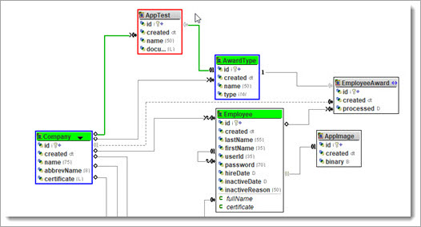
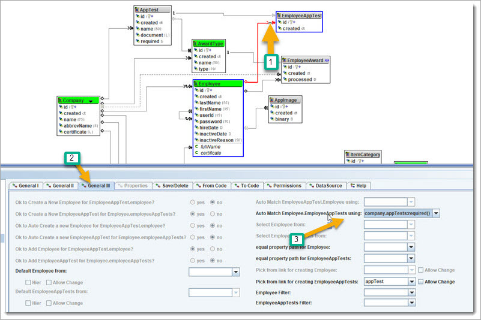
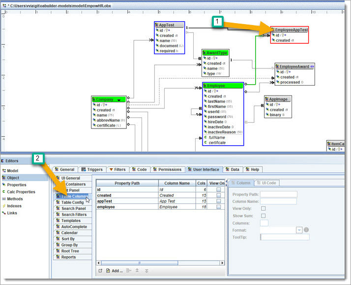
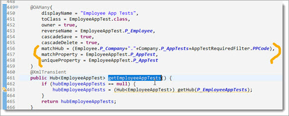
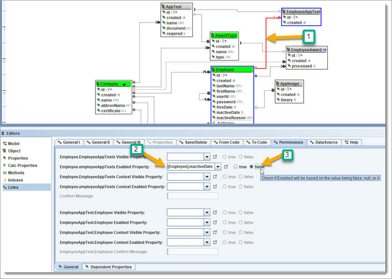

BizRule: all employees need to pass a series of company tests, and each one
could have an AwardType. We can use this as an example to show another way to automate how Links work.
BizRule: all employees need to pass a series of company tests, and each one
could have an AwardType. We can use this as an example to show another way to automate how Links work.
BizRule: all employees need to pass a series of company tests, and each one
could have an AwardType. We can use this as an example to show another way to automate how Links work.
Create a new Object "AppTest" and add Name (String, max: 50, display: 15), and add the properties for the UI display, search & table columns.
Create another property "document", type is "String Long", and check “Html” in the "Flags" tab.
Create a new Link "Company has many AppTests", and
make it owned.
Set up a new Link "AwardType has many AppTests", and set "create method AppTest.getAwardType" to no.
Set this new Link (General III tab) "Select AwardType from" to: "company.awardTypes".

We'll need to add a flag to AppTest to know if all Employees must take it.
Add property "required" and type is "boolean". Use the "Flags" tab to check
"dont track Primitive null".


Now, we need to add support for an Employee.appTests that are automatically created if "Employee.company.apptests:required".
To describe it another way: "An
Employee needs to take each required Company Test".
Create a new Object "EmployeeAppTest", create Link "Employee owns many EmployeeAppTests".
Now, create a new Link "EmployeeAppTest has an AppTest, and is required". Set (General II tab) "Create method AppTest.getEmployeeAppTests" to no.
Go back and click on "Employee.employeAppTest" Link and "General III" tab, and "Pick from link for creating EmployeeAppTests" to "appTest".

Go to "General II" tab, and set "Unique property for EmployeeAppTests" to
"appTest".
Ok, that was interesting. We need to do one more thing ... have all Company required Tests be assigned to Employees - let us see how that can be done - use the automatch,
which means to automatically create EmployeeAppTests for all Company.appTests that are required.

Click on EmployeeAppTest Object and update the UI tables columns - to use Employee & AppTest

 ReGen & Run and then we will recap before adding more.
ReGen & Run and then we will recap before adding more.
Create a new Company AppTest.

Now go to Employees tab, and all Employees for this Company will have the AppTest added. 
There is still something we need to add - we don’t want an inactive Employee getting the Company required AppTest.
We will do this next, but first let us
look at the code for Employee.employeeAppTests.

 Discuss & Learn: the match info is stored in the Annotation, which is metadata
about the Employee used to manage the Employee.EmployeeAppTests. The getHub uses this to be able to get the EmployeeAppTests and keep them updated with the
Company.AppTests that are required ... matchHub uses property path "Company.appTests:required".
Discuss & Learn: the match info is stored in the Annotation, which is metadata
about the Employee used to manage the Employee.EmployeeAppTests. The getHub uses this to be able to get the EmployeeAppTests and keep them updated with the
Company.AppTests that are required ... matchHub uses property path "Company.appTests:required".
Let us make sure that inactive Employees don’t get new AppTests. Click on the link Employee.employeeAppTests, then go to "Permissions" tab, and set the following:

Next, we need to make sure that an EmployeeAppTest that is completed is not removed. First, create a property for EmployeeAppTest.completed and make it a Date.
We'll create a Callback for removing: click on the Link Employee.employeeAppTests,
click on "From Code", and then bottom tab
"Employee.employeeAppTestsCallback()".
Then set the code to match:

ReGen & Run, to see how adding a Company.AppTest is added to Employees when it
is required, and removed if it is not required ... unless the Employee has already completed it.
 Review: "A Company can set up Employee Tests that offer an AwardType". "If the Test
is required, then all active Employees will get it".
Review: "A Company can set up Employee Tests that offer an AwardType". "If the Test
is required, then all active Employees will get it".
We showed how to set up the Links, and how values in Company.AppTest automatically created matches in
Employee.employeeAppTests for active Employees. This also used a Callback to fine tune the rules.
 Continue. Let’s make the whole Employee Object disabled if the inactive is set -
except for unsetting the inactive.
Continue. Let’s make the whole Employee Object disabled if the inactive is set -
except for unsetting the inactive.
Go to Object Editor, click the "Permissions" tab, and set the Enabled Property to "inactive = false".
ReGen & Run, go to Company "Test Corp", "Employees" tab and set inactiveDate for
"John Doe".
You will notice that the UI for this Employee is disabled, including the “inactive date”. This keeps it from being re-activated by removing the inactive
date.
To fix this, go to Model property Employee.inactive and create a Callback to allow it to be enabled.

ReGen & Run, go to Company "Test Corp", "Employees" tab and see that you can
clear the inactiveDate for "John Doe".

Now, we will set it up so that an Employee will get an AwardType once the EmployeeAppTest is completed.
Here's an option: Add code to method EmployeeAppTest.setCompleted to add the AwardType to Employee.EmployeeAwards. Here is what it looks like.

The method isLoaded is built in and is used to know if an object is being
initialized/loaded.
The method start & end ServerOnly is so that the code will run on the main server. OA supports distributed models, and this is one of a
few methods used for objects to interact with how and where code is run. Other options that could also be used: 1: create a process that would do it and listen
for completed, 2: create a Trigger that would do it.


All three are valid solutions. The last two ideas are "outside" of the Object code, and might be preferred if you want to keep custom business code outside of
the Objects.
 CheckPoint #6 created here.
CheckPoint #6 created here.